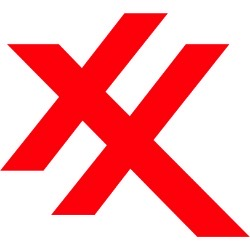

ExxonMobil
Primary point of contact for mechanical integrity engineering for the Beaumont Refinery's Oil Movements.

Primary point of contact for mechanical integrity engineering for the Beaumont Refinery's Oil Movements.
1 year co-op during my undergrad working as a project engineering intern. Support unit outages and designed $100k+ piping projects.